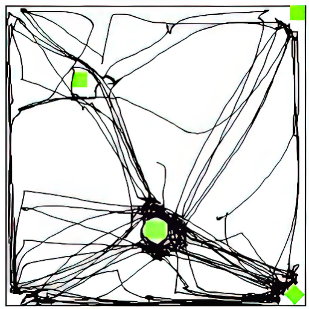
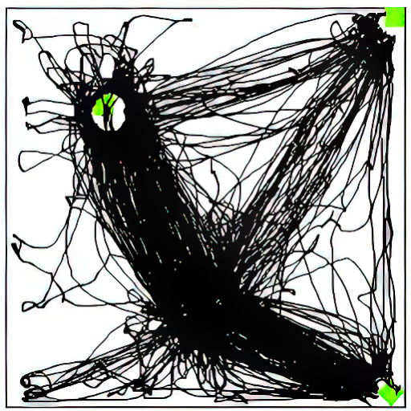

1 UNDERSTAND
What this library is, and the idea that makes it work
The Open-Field Virtual Library contains raw data objects of rodent spontaneous activity in an open field, obtained in the course of 43 experiments and deposited as 29 datasets in the FRDR repository. Uniquely, the library is one searchable collection of rodent spontaneous activity in the open field during repeated testing and after treatment with drugs or brain lesions. This is made possible by a conceptual shift in how the data is annotated. Here's the idea, what's inside, and how to use and cite it.
From study-centric to session-centric
Traditionally, behavioural data are nested inside one study (Study → Groups → Subjects → Sessions), and the metadata describe the study and its groups as a whole, not the individual session. Pulled out of its study, a session carries no self-contained description of the conditions it was run under — so sessions can't easily be recombined across experiments.
The session-centric schema flips this: every session is a discrete event, fully described by its own metadata under the four headings of a Methods section — Apparatus, Subjects, Treatment, Procedure. Because each session now stands on its own, sessions run years apart, for different hypotheses, can be queried together on shared parameters.
That singular conceptual shift is what makes 29 deposits behave as one functional dataset — and it's a template any lab can reuse for its own well-characterized behavioural collection.
Introduced in Szechtman, Dvorkin-Gheva & Gomez-Marin, GigaScience (2022).
Each session is described under four Methods headings, then queried as one unit.
What a session looks like
Each trial is a 55-minute recording of one rat in the open field, captured from above. From that video the rat's position is extracted as a track file (XY coordinates over time) and summarized as a path-plot of the whole session. These are the raw data objects in the library, alongside smoothed track files and pre-computed summary measures.

open-field video (31× speed) → its locomotion path-plot

open-field video (31× speed) → its locomotion path-plot
Each video and path-plot are of the same entire 55 min long session — raw behaviour on the left, its paths of locomotion on the right. At 31× speed, the full 55-minute session plays in 1 min 47 s. Later, the toolbox can play the video and its track in sync.
How it's organized
The annotation schema is instantiated as a relational database whose hub is the session: every one of the 20,491 trials has a single record, linked to its subject, apparatus, treatment, and procedure. That design lets a question like "all sessions where a rat with a nucleus-accumbens lesion received its 8th quinpirole injection" be answered across all experiments at once.
The library is a portal to these data — it helps you find, assemble, and analyze them; the files themselves live in Canada's Federated Research Data Repository (FRDR).
What's in the collection
Nearly two decades of standardized open-field testing. Exact, filterable counts live in the Inventory (Explore & Take).
Raw data objects
Video (.mpg) · track file (.csv) · path-plot (.gif) for each session — ~13 TB across 168,467 files.
Treatments
Nine drugs (QNP, DPAT, mCPP, escitalopram, imipramine, clorgyline, ritanserin, CP809101, U69593) plus saline & two vehicles — given alone or in combination — form 20 drug treatments (most trials: QNP 8,012, saline 7,551). Brain manipulations target NAc, BLA, OFC, IL, PIT (lesion / sham / unoperated).
Smoothed tracks & measures
Smoothed track files (pre-processed to remove digitizing noise) plus pre-computed checking, locomotion, spatial-dispersion, path-stereotypy and time-course measures.
Reuse & replicate
The data are open for analyses well beyond their original purpose — machine learning, teaching, and new questions. And the session-centric approach is a template: other labs can build their own collection of well-characterized open-field behaviour — or of performance in any clearly-defined standard apparatus — and deposit it in a public repository the same way.
Cite & access
- · Method paper — Szechtman et al., GigaScience (2022)
- · Data — Szechtman Lab Collection on FRDR